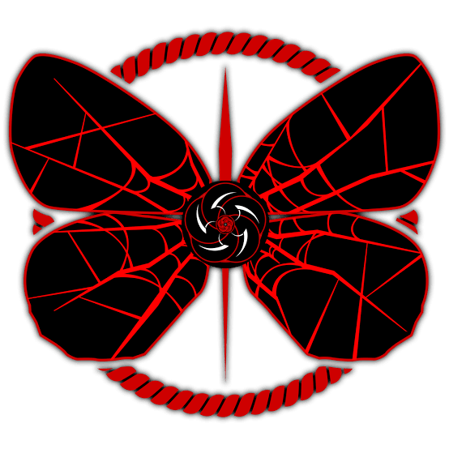

Feito por João Vitor Grochovski 1.C
Oque é a House of Spiders?
A House of Spiders, ou simplesmente a HoS, é o local onde a então Yoshihide viveu a maior parte de sua vida (miserável). A Partir daqui eu estarei descrevendo a House of Spiders apenas como HoS.
A HoS está localizada em um local não identificado da City.
Fonte: Limbus Company Wiki, informações do próprio jogo.